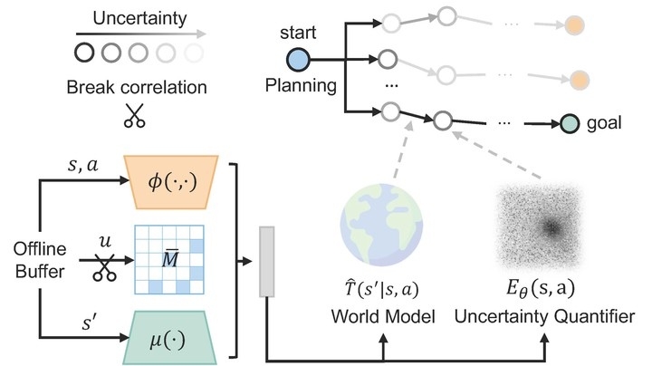
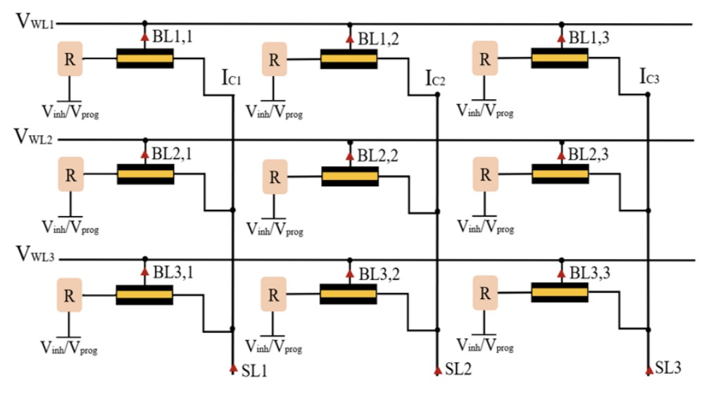

Research
I am interested in machine learning and computer systems, currently focused on developing scalable, hardware-aware algorithms and systems to accelerate large machine learning models. Previously, I conducted research in generalizable reinforcement learning and hardware acceleration for machine learning.
|
|
|
MagicDec: Breaking the Latency-Throughput Tradeoff for Long Context Generation with Speculative Decoding
Jian Chen*,
Vashisth Tiwari*,
Ranajoy Sadhukhan*,
Zhuoming Chen,
Jinyuan Shi,
Ian En-Hsu Yen,
Beidi Chen
ICLR 2025
Blog
/
ArXiv
/
Code
A comprehensive analysis of LLM inference performance and speculative decoding speedup, identified that speculative decoding can achieve both low latency and high throughput for moderate to long sequences with an intelligent speculation strategy.
|
|

|
BECAUSE: Bilinear Causal Representation for Generalizable Offline Model-based Reinforcement Learning
Haohong Lin,
Wenhao Ding,
Jian Chen,
Laixi Shi,
Jiacheng Zhu,
Bo Li,
Ding Zhao
NeurIPS 2024
ArXiv
/
Code
An algorithm utilizes low-rank Markov Decision Processes to capture causal transition dynamics, effectively addressing objective mismatch caused by distribution shifts in offline Model-based Reinforcement Learning.
|
|

|
Design and Optimization of FeFET Based CiM for Neural Network Acceleration
Shuxin Zhang,
Jian Chen,
Yumeng Wang,
Zhimin Jia,
Cheng Zhuo,
Xunzhao Yin
ISEDA 2023
Paper
A novel Compute-in-Memory crossbar design utilizing Ferroelectric Transistors to enable non-von Neumann hardware acceleration of Multiply-and-Accumulate operations in Neural Networks.
|
|
{kind=link}